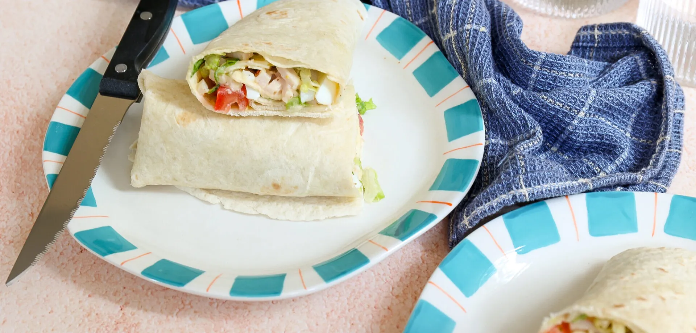

Lunch wrap met kip

Ingredienten
- 4 wraps
- 100 gr ijsbergsla
- 3 eieren
- 1 tomaat
- 2 el honing mosterd dressing
- 100 gr gerookte kipreepjes
- snufje peper
- 2 el Parmezaanse kaas vlokken
Bereiding
- Kook de eieren in circa 8 minuten hard. Laat de eieren schrikken en pel ze daarna.
- Snijd de eieren in stukjes.
- Snijd de tomaten in blokjes.
- Doe de sla in een kom, voeg de blokjes tomaat,
ei, kipreepjes, honing mosterd dressing en de Parmezaanse kaas vlokken toe.
Breng op smaak met een snufje peper. Meng door elkaar.
- Beleg alle wraps met salade en rol ze op.